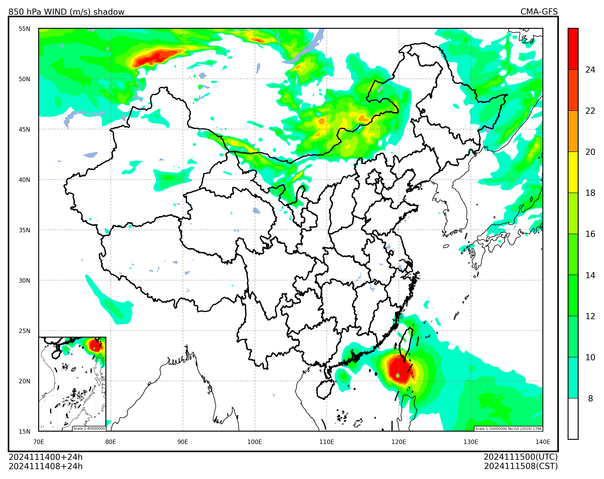

填充图#
本节介绍如何使用 cedarkit-maps 绘制 850 hPa 风速填充图。
首先导入需要使用的包。包括：
数据结构：numpy, pandas
cedarkit 工具套件
数据准备：reki
数据查找函数：
find_local_fileGRIB2文件要素加载函数：
load_field_from_file
气象可视化：cedarkit.maps
绘图板：
Panel底图布局：
EastAsiaMapDomain绘图样式：
ContourStyle颜色表加载函数：
get_ncl_colormap
import numpy as np
import pandas as pd
from reki.data_finder import find_local_file
from reki.format.grib.eccodes import load_field_from_file
from cedarkit.maps.style import ContourStyle
from cedarkit.maps.chart import Panel
from cedarkit.maps.domains import EastAsiaMapTemplate
from cedarkit.maps.colormap import get_ncl_colormap
设置绘图的数据参数，使用 CMA-GFS 2024 年 11 月 14 日 00 时次 024 数据。
system_name = "CMA-GFS"
data_type = "cma_gfs_gmf/grib2/orig"
start_time = pd.to_datetime("2024-11-14 00:00:00")
forecast_time = pd.to_timedelta("24h")
加载数据#
获取 GRIB2 数据路径
file_path = find_local_file(
data_type,
start_time=start_time,
forecast_time=forecast_time,
)
file_path
PosixPath('/g3/COMMONDATA/OPER/CEMC/GFS_GMF/Prod-grib/2024111400/ORIG/gmf.gra.2024111400024.grb2')
加载 850 hPa 风场。风场在 ecCodes 的内置要素名为 u 和 v
u_850_field = load_field_from_file(
file_path,
parameter="u",
level_type="pl",
level=850
)
v_850_field = load_field_from_file(
file_path,
parameter="v",
level_type="pl",
level=850
)
u_850_field
<xarray.DataArray 'u' (latitude: 1440, longitude: 2880)> Size: 33MB
array([[-3.42031738, -3.42031738, -3.42031738, ..., -3.42031738,
-3.42031738, -3.42031738],
[-1.61031738, -1.61031738, -1.61031738, ..., -1.61031738,
-1.61031738, -1.61031738],
[-1.77031738, -1.77031738, -1.77031738, ..., -1.77031738,
-1.77031738, -1.77031738],
...,
[-2.60031738, -2.59031738, -2.58031738, ..., -2.63031738,
-2.62031738, -2.61031738],
[-2.63031738, -2.62031738, -2.62031738, ..., -2.69031738,
-2.67031738, -2.65031738],
[-2.77031738, -2.79031738, -2.81031738, ..., -2.86031738,
-2.85031738, -2.81031738]])
Coordinates:
time datetime64[ns] 8B 2024-11-14
step timedelta64[ns] 8B 1 days
valid_time datetime64[ns] 8B 2024-11-15
pl float64 8B 850.0
* latitude (latitude) float64 12kB 89.94 89.81 89.69 ... -89.81 -89.94
* longitude (longitude) float64 23kB 0.0 0.125 0.25 ... 359.6 359.8 359.9
Attributes: (12/17)
GRIB_edition: 2
GRIB_centre: babj
GRIB_subCentre: 0
GRIB_tablesVersion: 4
GRIB_localTablesVersion: 0
GRIB_dataType: fc
... ...
GRIB_stepType: instant
GRIB_stepUnits: 1
GRIB_stepRange: 24
GRIB_endStep:int: 24
GRIB_count: 149
long_name: discipline=0 parmcat=2 parm=2计算得到风速场
wind_speed_850_field = np.sqrt(u_850_field ** 2 + v_850_field ** 2)
wind_speed_850_field
<xarray.DataArray (latitude: 1440, longitude: 2880)> Size: 33MB
array([[3.49408509, 3.49408509, 3.49408509, ..., 3.49005204, 3.49205483,
3.49205483],
[1.74963728, 1.74963728, 1.75357187, ..., 1.7457511 , 1.74963728,
1.74963728],
[1.82519138, 1.82519138, 1.82519138, ..., 1.82519138, 1.82519138,
1.82519138],
...,
[5.98069046, 6.03950877, 6.03522657, ..., 6.05677237, 6.03441402,
6.03007846],
[5.77019667, 5.91757894, 5.90861441, ..., 5.98460945, 5.95776006,
5.94882276],
[4.65091124, 4.75143846, 4.75514078, ..., 4.80894422, 4.80300303,
4.77937368]])
Coordinates:
time datetime64[ns] 8B 2024-11-14
step timedelta64[ns] 8B 1 days
valid_time datetime64[ns] 8B 2024-11-15
pl float64 8B 850.0
* latitude (latitude) float64 12kB 89.94 89.81 89.69 ... -89.81 -89.94
* longitude (longitude) float64 23kB 0.0 0.125 0.25 ... 359.6 359.8 359.9配置#
定义填充图层次
wind_speed_contour_lev = np.arange(8, 26, 2)
定义填充图色表
color_index = np.arange(90, 236, 15) - 2
color_index[0] = -1
wind_speed_color_map = get_ncl_colormap(
"rainbow+white+gray", index=color_index
)
定义填充图样式 (ContourStyle)
wind_speed_style = ContourStyle(
colors=wind_speed_color_map,
levels=wind_speed_contour_lev,
fill=True,
)
绘制#
创建中国区域底图布局
domain = EastAsiaMapTemplate()
绘制填充图，设置标题和颜色条
panel = Panel(domain=domain)
panel.plot(wind_speed_850_field, style=wind_speed_style)
domain.set_title(
panel=panel,
graph_name="850 hPa WIND (m/s) shadow",
system_name=system_name,
start_time=start_time,
forecast_time=forecast_time,
)
domain.add_colorbar(panel=panel, style=wind_speed_style)
panel.show()
